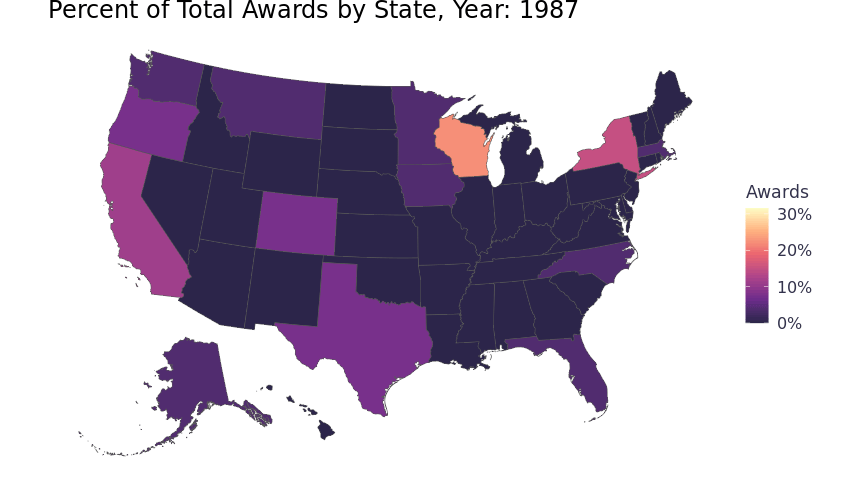

Background
Tidy Tuesday
I give the same boiler plate on every Tidy Tuesday, post so skip ahead if you have read any. Tidy Tuesday is a weekly social data project in the R for Data Science community where R users explore a new dataset and share their findings. If you’re an R user (or aspiring) I highly recommend participating. A few specific Tidy Tuesday resources I’d recommend are David Robinson’s Tidy Tuesday screen casts, Twitter #TidyTuesday, and the TidyTuesday podcast with Jon Harmon. All Tidy Tuesday datasets are available on Github.
The Great American Beer Festival
In this installation, we’re analyzing data from The Great American Beer Festival. The Great American Beer Festival (GABF) is a three-day annual festival in Denver, Colorado. Judges evaluate several thousand beers entered by hundreds of breweries and award gold, silver, and bronze medals in 100+ categories - though not every medal is necessarily awarded in each category. GABF was founded in 1982 and had 22 participating breweries in the first year. To download the data I use the tidytuesdayR package.
Analysis
The GABF data set has an observation (row) for each beer that received an award for each year it received one. The obvious challenge with that is the dataset only includes beers awarded - it provides no data regarding participation. Without participation data many questions will go unanswered. We can’t infer the overall quality of beers based on total awards because we won’t know how many times they didn’t win. Huge bummer because many of the questions that came to mind when I saw the name of the dataset won’t be possible, c’est la vie.
I summarized the data set with skimr. The output allowed me to quickly get an understanding of the dataset and identify some data cleaning tasks. The data types of the columns are all character, except year which is double. I converted medal to factor so I could more easily analyze it as an ordinal attribute. State has 52 unique values, but I spotted duplicate records due to casing (AK & Ak and WA & wa). I changed the casing in these observations bringing the number of states to 50, including Washington D.C. meaning one state has no awards. Medal is a character which makes sense, but I added a numeric version in case I want to do some weighted totals.
skimr::skim(gabf)| Name | gabf |
| Number of rows | 4970 |
| Number of columns | 7 |
| _______________________ | |
| Column type frequency: | |
| character | 6 |
| numeric | 1 |
| ________________________ | |
| Group variables | None |
Variable type: character
| skim_variable | n_missing | complete_rate | min | max | empty | n_unique | whitespace |
|---|---|---|---|---|---|---|---|
| medal | 0 | 1 | 4 | 6 | 0 | 3 | 0 |
| beer_name | 0 | 1 | 2 | 89 | 0 | 3811 | 0 |
| brewery | 0 | 1 | 6 | 58 | 0 | 1859 | 0 |
| city | 0 | 1 | 3 | 44 | 0 | 803 | 0 |
| state | 0 | 1 | 2 | 2 | 0 | 52 | 0 |
| category | 0 | 1 | 4 | 76 | 0 | 515 | 0 |
Variable type: numeric
| skim_variable | n_missing | complete_rate | mean | sd | p0 | p25 | p50 | p75 | p100 | hist |
|---|---|---|---|---|---|---|---|---|---|---|
| year | 0 | 1 | 2007.88 | 8.68 | 1987 | 2002 | 2009 | 2015 | 2020 | ▂▃▅▆▇ |
gabf <- gabf %>%
mutate(medal = fct_relevel(medal, c("Bronze", "Silver"))) %>%
mutate(state = str_to_upper(state)) %>%
mutate(medal_numeric = if_else(medal == "Gold", 3, if_else(medal == "Silver", 2, 1)))I visualized awards over time and saw the dataset starts in 1987 (27 awards) and ends in 2020 (218 awards). Growth appears to be linear with only a few years that ever decreased.
gabf %>%
group_by(year) %>%
tally() %>%
ggplot(aes(x = year, y = n)) +
geom_col(width = .75) +
labs(y = "Awards", x = "Year", title = "Total Awards by Year") +
theme_blog() 
The annual growth in the number of awards appears to be similar for each medal class.
gabf %>%
group_by(year, medal) %>%
tally() %>%
ggplot(aes(x = year, y = n, color = medal)) +
geom_line() +
labs(x = "Year", y = "Awards", color = "Medal", title = "Medals by Year") +
theme_blog() The dataset has 515 different award categories, which appear to be different categories of beer. That’s more than I expected. Looking at the top 5 categories table, the category with the most awards is the Classic Irish-Style Dry Stout with 62. That accounts for 0.01 percent of the awards and less than two awards per year - meaning there aren’t categories that have been used throughout the 34 years. Given that, the category attribute will be difficult to use because it’s probably very inconsistent year to year.
Top 5 Beer Categories
cats <- gabf %>%
mutate(category = forcats::fct_lump(category, n = 5)) %>%
group_by(category) %>%
tally()
other_cat <- cats %>%
filter(category == "Other")
cats %>%
filter(category != "Other") %>%
arrange(dplyr::desc(n)) %>%
bind_rows(., other_cat) %>%
kableExtra::kable(col.names = c("Category", "Awards")) %>%
kableExtra::kable_styling(bootstrap_options = "hover") | Category | Awards |
|---|---|
| Classic Irish-Style Dry Stout | 62 |
| American-Style Pale Ale | 61 |
| Bock | 61 |
| Robust Porter | 61 |
| Imperial Stout | 60 |
| Other | 4665 |
The other attributes in my summary table (beer_name, brewery, and city) all appear to be formatted correctly, but quite disperse I won’t inspect them any further at the moment.
State is one attribute that seemed clean so I decided to take a closer look at that. The top 5 states account for almost 50 percent of all the awards. Two of the top five states are California and Texas, which are the two most populous states in the US.
Top 5 States
states <- gabf %>%
mutate(state = forcats::fct_lump(state, n = 5)) %>%
group_by(state) %>%
tally()
others <- states %>%
filter(state == "Other")
states %>%
filter(state != "Other") %>%
arrange(dplyr::desc(n)) %>%
bind_rows(., others) %>%
kableExtra::kable(col.names = c("State", "Awards")) %>%
kableExtra::kable_styling(bootstrap_options = "hover")| State | Awards |
|---|---|
| CA | 962 |
| CO | 659 |
| OR | 328 |
| TX | 249 |
| WI | 234 |
| Other | 2538 |
Analyzing the states effectively will require population data to control for or consider per capita. Any mapping will require some sort of GIS data. These attributes are often packaged together because they’re used together frequently. There are a number of R libraries we can use. The most robust one I know off hand is tidycensus, which is a wrapper around the US Census Bureau’s API. I mention it for reference, but for simplicity I used albersusa. It has simple features which is the GIS data used by R’s sf package.
Joining alberusa data
The albersa usa_sf() function pulls a state dataset from the package which includes population and simple features. I wrote a function that takes a data frame, which I can reuse easily. I know I’ll likely make more changes to gabf and changes after my awards_by_state function runs so create an ephemeral function just makes it a bit easier than managing multiple versions of data frames in my experience. I added some state level measurements that I assume we’d use later.
awards_by_state <- . %>%
group_by(state) %>%
summarise(state_total_awards = n(),
state_total_awards_weighted = sum(medal_numeric),
state_years_with_awards = n_distinct(year)) %>%
ungroup() %>%
right_join(albersusa::usa_sf("laea"), by = c("state"="iso_3166_2")) %>%
rename("state_name"="name") %>%
mutate(state_avg_award = state_total_awards_weighted / state_total_awards,
state_total_awards_per_cap = (state_total_awards / pop_2014) *100000,
state_percent_total_awards = state_total_awards / sum(state_total_awards, na.rm = T)) %>%
replace_na(list(state_total_awards = 0, state_total_awards_weighted = 0, avg_award = 0, state_total_awards_per_cap = 0, state_percent_total_awards = 0, state_years_with_awards = 0)) State Rankings Table
I wanted to view the state data with the populations and the new measures. I used a table view and some row-wise summaries to get more context for the top states and bottom states. I used the reactable pacakge because I could visualize row-wise summaries. It’s a lot of code, but most of it is pretty simple to adjust - I worked off of the package’s Twitter Followers demo and Women’s World Cup Predictions demo.
The table shows each state’s population, share of total awards, awards per capita (PC), and the average medal (Avg). The table is sorted by the awards per capita (PC). The table provides a few new insights. A few low population states (e.g. Wyoming, Alaska, & Delaware) have a disproportionate number of awards. Alternatively, a few high population states are not well represented including New York, Georgia, and most of all Florida (no shock). Most states have a centered distribution of medals (average silver) with the exceptions mostly being states that have a sparse number of awards.
make_color_pal <- function(colors, bias = 1) {
get_color <- colorRamp(colors, bias = bias)
function(x) rgb(get_color(x), maxColorValue = 255)
}
off_rating_color <- make_color_pal(c("#f93014", "#f8fcf8", "#4DBE56"), bias = 1.3)
rating_column <- function(maxWidth = 55, ...) {
colDef(maxWidth = maxWidth, align = "center", class = "cell number", ...)
}
tbl <- gabf %>%
awards_by_state() %>%
select(state_name, pop_2014, state_percent_total_awards, state_total_awards_per_cap, state_avg_award) %>%
reactable(
height = 550,
striped = TRUE,
defaultPageSize = 51,
defaultSorted = "state_total_awards_per_cap",
defaultColDef = colDef(headerClass = "reactable-header", align = "left"),
columns = list(
state_name = colDef(
name = "State",
width = 150
),
pop_2014 = colDef(
name = "Population (2014)",
cell = function(value) {
width <- paste0(value * 100 / max(.$pop_2014), "%")
value <- format(value, big.mark = ",")
value <- format(value, width = 14, justify = "right")
bar <- div(
class = "reactable-bar-chart",
style = list(marginRight = "6px"),
div(class = "reactable-bar", style = list(width = width, backgroundColor = "#3fc1c9"))
)
div(class = "reactable-bar-cell", span(class = "reactable-number", value), bar)
}
),
state_percent_total_awards = colDef(
name = "Percent of Total Awards",
cell = JS("function(cellInfo) {
// Format as percentage
const pct = (cellInfo.value * 100).toFixed(1) + '%'
// Pad single-digit numbers
let value = pct.padStart(5)
// Render bar chart
return (
'<div class=\"reactable-bar-cell\">' +
'<span class=\"reactable-number\">' + value + '</span>' +
'<div class=\"reactable-bar-chart\" style=\"background-color: #e1e1e1\">' +
'<div class=\"reactable-bar\" style=\"width: ' + pct + '; background-color: #fc5185\"></div>' +
'</div>' +
'</div>'
)
}"),
html = TRUE
),
state_total_awards_per_cap = rating_column(
name = "PC",
defaultSortOrder = "desc",
cell = function(value) {
scaled <- (value - min(.$state_total_awards_per_cap)) / (max(.$state_total_awards_per_cap) - min(.$state_total_awards_per_cap))
color <- off_rating_color(scaled)
value <- format(round(value, 1), nsmall = 1)
div(class = "reactable-per-capita", style = list(background = color), value)}
),
state_avg_award = rating_column(
name = "Avg",
cell = function(value) format(round(value, digits = 2), nsmall = 2)
)
),
compact = TRUE,
class = "reactable-tbl")
div(class = "reactable-tbl-view",
div(class = "div-subtitle",
div(class = "div-title", "Total GABF Awards by State, Population Adjusted (1987 - 2020)"),
"When reviewing total awards received per capita, Colorado, Wyoming, Alaska, Oregon, & Montana look like the big winners"
),
tbl
)Colorado is a great state for beer, but I would not expect it to be distinguished as a clear leader among the states. Similar story with Wyoming. Again, the data set does not provide information regarding participation. I suspect there is skew in the number of awards won by state because the festival is always held in Denver. Breweries located closer to Denver are more likely to participate.
Separately, time obviously plays a significant role that is not captured by the above table. The festival is older than most of the breweries that participated in 2020. The competition in 2020 was probably completely different, more crowded, than it was in 1987. When looking at total awards, we’re not accounting for that.
Brief USA Beer History
A little history on brewing in the US helps us better understand the time variable in the absencense of participation data. Jimmy Carter signed HR 1337 into law which made it explicitly legal to homebrew beer. When that law was passed, there were only ~50 breweries in the USA. Today, there are ~7k permitted breweries. You can read more in this interesting article on Vinepair. With that in mind, when the festival started breweries like Anheuser-Busch, Miller Brewing Company, and Coors Brewing Company controlled even more of the market share than they do today. The newcomers at that time were Boston Beer Company (i.e. Sam Adams) and Alaskan Brewing Co., founded in 1984 and 1986 respectively. That history plays a significant role in our analysis because the newer breweries of today are years behind these older breweries with regard to winning awards. 
Animated Map
I visualized the award data in a Choropleth map. To capture the year data, I used gganimate to loop through and create a map for each year in a gif. To scale the color of the Choropleth by the specific year, rather than by the entire 34 years, I updated the awards_by_state function to include year (awards_by_state_year). It’s a bit of code to calculate different sums and counts for each level of aggregation and to impute records for missing years, but dplyr and tidyr do the heavy lifting. Nesting the annual observations in a data frame column keeps the data frame at 51 rows and prevents duplicating the simple features data for each year. The ggplot aesthetics will not take the nested data, but it’s easier to work with the data frame that way for other purposes and the function will probably be handy later. Below is the function spelled out.
# Creates a column with the year total, every row with the same year has the same value
awards_by_state_year <- . %>%
add_count(year, name = "year_total_awards")
# Aggregates by year, state, and year total and counts the number of rows
awards_by_state_year <- . %>%
add_count(year, name = "year_total_awards") %>%
group_by(state, year, year_total_awards) %>%
summarise(state_year_total_awards = n()) %>%
ungroup()
# Joins missing states (from state.abb) and imputes the missing years and zero awards for each
awards_by_state_year <- . %>%
add_count(year, name = "year_total_awards") %>%
group_by(state, year, year_total_awards) %>%
summarise(state_year_total_awards = n()) %>%
ungroup() %>%
full_join(tibble(state = state.abb), by = c("state" = "state")) %>%
replace_na(list(year = 1987)) %>%
complete(state, nesting(year)) %>%
replace_na(list(state_year_total_awards = 0))
# Imputes year_total_awards for the new years that were imputed in the last step
awards_by_state_year <- . %>%
add_count(year, name = "year_total_awards") %>%
group_by(state, year, year_total_awards) %>%
summarise(state_year_total_awards = n()) %>%
ungroup() %>%
full_join(tibble(state = state.abb), by = c("state" = "state")) %>%
replace_na(list(year = 1987)) %>%
complete(state, nesting(year)) %>%
replace_na(list(state_year_total_awards = 0)) %>%
group_by(year) %>%
mutate(year_total_awards = max(year_total_awards, na.rm = T)) %>%
ungroup()
# Calculate the percent of year total for each record (Choropleth fill)
awards_by_state_year <- . %>%
add_count(year, name = "year_total_awards") %>%
group_by(state, year, year_total_awards) %>%
summarise(state_year_total_awards = n()) %>%
ungroup() %>%
full_join(tibble(state = state.abb), by = c("state" = "state")) %>%
replace_na(list(year = 1987)) %>%
complete(state, nesting(year)) %>%
replace_na(list(state_year_total_awards = 0)) %>%
group_by(year) %>%
mutate(year_total_awards = max(year_total_awards, na.rm = T)) %>%
ungroup() %>%
mutate(pct_of_year_total_awards = state_year_total_awards / year_total_awards)
# Finally, nest the yearly data under the state and join the alberusa data set and create the function
awards_by_state_year <- . %>%
add_count(year, name = "year_total_awards") %>%
group_by(state, year, year_total_awards) %>%
summarise(state_year_total_awards = n()) %>%
ungroup() %>%
full_join(tibble(state = state.abb), by = c("state" = "state")) %>%
replace_na(list(year = 1987)) %>%
complete(state, nesting(year)) %>%
replace_na(list(state_year_total_awards = 0)) %>%
group_by(year) %>%
mutate(year_total_awards = max(year_total_awards, na.rm = T)) %>%
ungroup() %>%
mutate(pct_of_year_total_awards = state_year_total_awards / year_total_awards) %>%
group_by(state) %>%
nest() %>%
right_join(albersusa::usa_sf("laea"), by = c("state"="iso_3166_2"))Then we can plug the function and pipeline the data frame through and into a gganimate output.
chorpleth <- gabf %>%
awards_by_state_year() %>%
unnest(data) %>%
ggplot(ggplot2::aes(geometry = geometry, fill = pct_of_year_total_awards, group = year)) +
geom_sf() +
scale_fill_viridis_c(option = "magma", alpha = .9, begin = .1, labels = scales::percent) +
labs(title = 'Percent of Total Awards by State, Year: {round(frame_time,0)}', fill = "Awards") +
theme_blog(axis.text = ggplot2::element_blank(),
axis.ticks = ggplot2::element_blank()) +
transition_time(year) +
ease_aes('linear')
animate(chorpleth, fps = 5)
Interactive TIE Fighter Plot & Line Chart
Looking at the animation, you can see Wisconsin has lost a proportion of total awards over the 34 years. This view does not provide clarity regarding where those proportions are going. To see the trend of awards for the state, I visualized a logistic regression model in a TIE fighter plot. A logistic regression model provides a useful summary for the 34 years of awards for each state, but I wanted to keep the annual context so I thought the TIE fighter plot would work better accompanied with a line chart. I decided to add in dynamic highlighting so that both visuals can be used interactively. I used crosstalk and plotly to build in the interactivity. Crosstalk enables htmlwidgets with cross-widget interactions (highlighting and filtering). Plotly builds interactive graphs and the author wrote a ggplotly() function that will convert ggplot2 graphics to plotly, brilliant! Now I can build interactive data visualizations without knowing much more than ggplot.